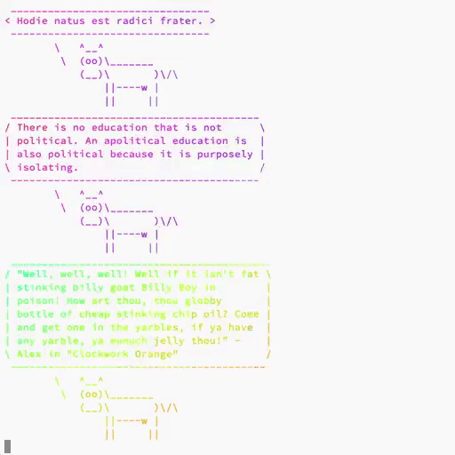
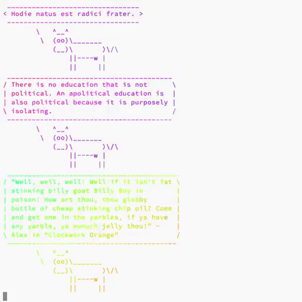

High quality GIF from video
October 13, 2018
 

When it comes to converting video to GIF, one usually gets a huge file and a questionable quality. Most of the guides suggest to use FFmpeg to do the conversion, but usually, they don’t bother with the quality of the result. As it turns out, folks from FFmpeg made some huge steps in improving the GIF output.